The board
Where everything is, for when an instruction says "the USB-Blaster port" and you are staring at the hardware.
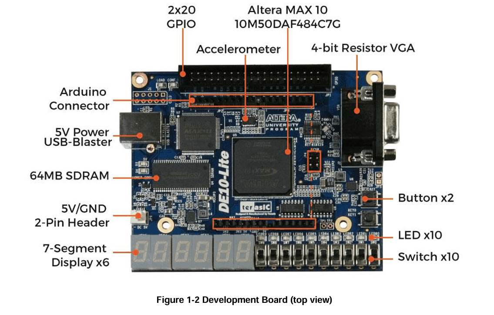
- FPGA
- Altera MAX 10,
10M50DAF484C7G - Inputs
- 10 slide switches (
SW), 2 push buttons (KEY) - Outputs
- 10 red LEDs (
LEDR), 6 seven-segment displays (HEX) - Programming
- USB-Blaster over connector
J3, which also powers the board - Status LEDs
D4Power Good ·D2CONF_DONE, lights once a design is loaded
Your folders
Fill these in once. Every path on this page updates to match, so you can copy them straight into Windows.
\quartus\bin64 also works.
This path contains a space. Quartus and System Builder are unreliable with spaces in paths — use something like C:\fpga\adder_top.
Use letters, digits and underscores only, starting with a letter. This name must match the module name inside your design file exactly.
Setup
Once per PCInstalls the tools that let Quartus talk to the DE10-Lite. You only do this the first time.
-
Copy bin32 into Quartus
Extract the zip, then copy the
bin32folder into your Quartus folder, next to thebin64folder already there:The Control Panel is a 32-bit program, but Quartus ships only 64-bit tools.
bin32supplies the pieces it needs to reach the board. -
Copy the DE10-Lite tools
Copy the
Toolsfolder from the zip so you end up with:C:\DE10_Lite\ToolsNeither tool has an installer — they run straight from this folder.
-
Connect the board
Plug the supplied USB cable into the board's USB-Blaster port — connector
J3, the square type-B socket on the left edge. The board is powered over USB and needs no separate supply.LED D4 (
Power Good) lights up. If it stays dark, try another cable — charge-only USB cables carry no data. -
Check it works
Run the Control Panel:
C:\DE10_Lite\Tools\DE10_Lite_ControlPanel\DE10_Lite_ControlPanel.exe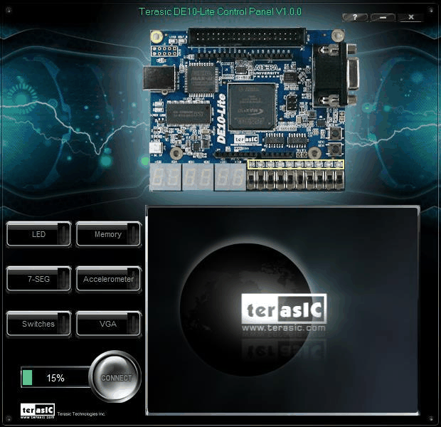
What you should see. Pick LED or 7-SEG on the left to drive the board. If it connects, your setup is correct. Flip a few switches and watch the LEDs respond. If it cannot find the board, see Help.
The Control Panel loads its own design onto the FPGA and replaces whatever was there. That is expected — you will program your own design over it next.
Lab workflow
Once per projectFrom an empty folder to a running design on the board. Repeat these four steps for every lab.
-
Create the project in System Builder
Run System Builder — it generates a Quartus project with every DE10-Lite pin already assigned, so you never assign pins by hand:
C:\DE10_Lite\Tools\DE10_Lite_SystemBuilder\DE10_Lite_SystemBuilder.exeSet Project Name to
, then fix the peripherals. It does not open in the state you want — CLOCK is ticked by default and has to come off: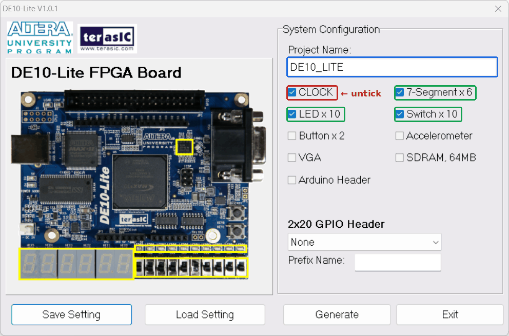
System Builder as it opens. Red: untick CLOCK. Green: leave these three ticked. Blue: your project name. You are aiming for exactly this:
System Configuration
Tick these three
- ✓ Switch x10
- ✓ LED x10
- ✓ 7-Segment x6
Leave all of these off
- × CLOCK
- × Button
- × VGA
- × SDRAM
- × Accelerometer
- × Arduino Header
- 2x20 GPIO Header
- None
- Prefix Name
- leave blank
Click Generate and save into a folder with no spaces in its path:
You now have
(the project),(pin assignments),,(a readable pin table) and— an empty wrapper with the ports already declared. -
Add the design
Open the wrapper System Builder just generated:
Delete everything in it, paste in the full contents of the
your instructor supplied — all four modules — and save.Keep the file name and the module name identical to the project name (
). A mismatch here is the most common cause of a failed compile. -
Compile
Open the project in Quartus:
Choose Processing ▸ Start Compilation and wait for Full Compilation was successful.
Then open the Compilation Report ▸ Flow Summary and sanity-check it:
- A few dozen logic elements.
- Total pins = 68 — that is 10 switches + 10 LEDs + 6 × 8 seven-segment lines. A different number means something was ticked wrong in step 1.
Warnings about undefined clocks or timing are normal here — this design has no clock. The output you need is:
-
Program the board
With the board plugged in, open Tools ▸ Programmer.
-
The Programmer window opens. Check Mode reads
JTAG, then click Hardware Setup….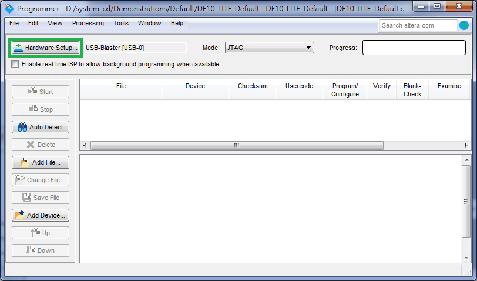
-
Set Currently selected hardware to
USB-Blaster [USB-0]and click Close. An empty dropdown means the driver is missing — see Help.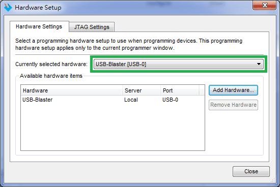
-
Click Auto Detect to scan the JTAG chain.
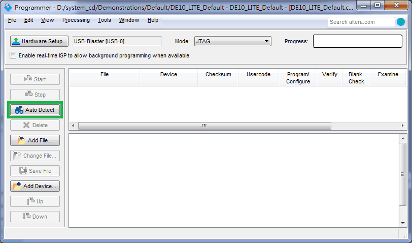
-
Several devices share the same JTAG ID. Choose
10M50DA.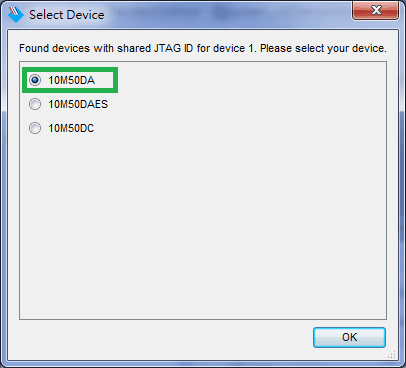
-
The device now shows in the chain as
10M50DA.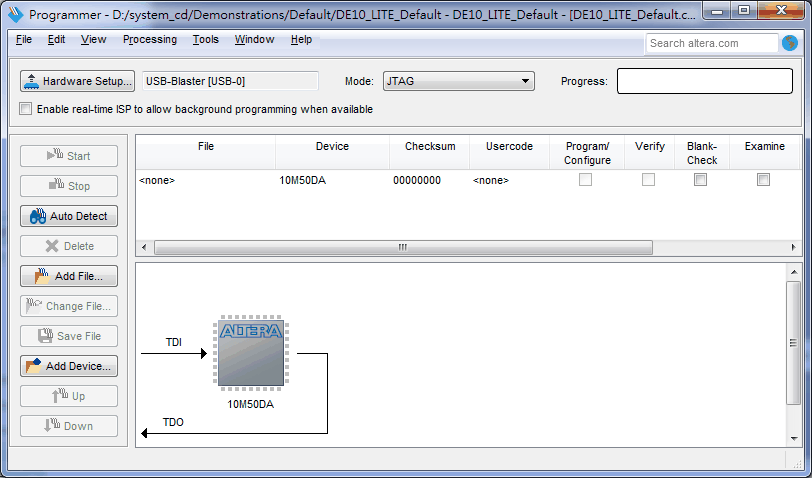
-
Right-click the device and choose Change File.
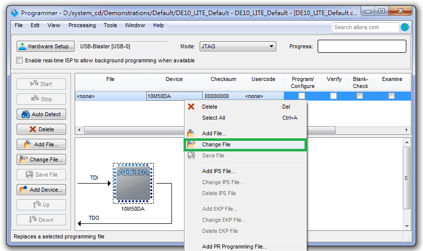
-
Pick your own
, which is in: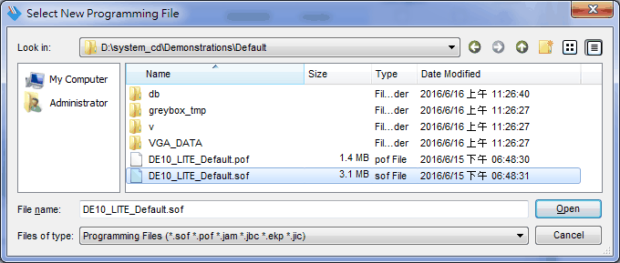
The manual shows Terasic’s own demo file here — pick yours instead. -
Tick Program/Configure on the device row, then click Start.
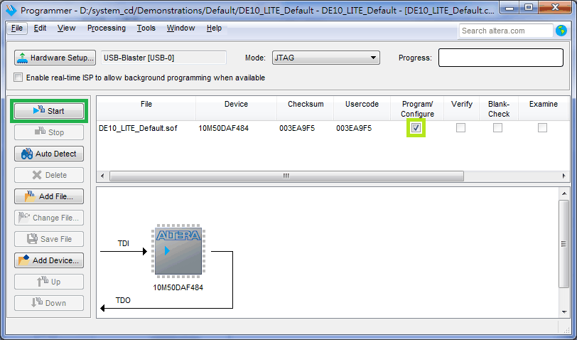
Screenshots from the DE10-Lite User Manual, section 3.1. Click any of them to open full size.
Progress reaches 100% and LED D2 (
CONF_DONE) turns on. Your design is now running — flip the switches and watch.A
.sofis volatile: it lives in the FPGA's RAM and disappears when the board loses power. That is exactly what you want while testing — just re-program after each power cycle. -
Signals
What the pins are called and which way round they work. Everything here is from the Terasic user manual.
Get the polarity wrong and nothing looks right
- The seven-segment displays are active LOW
- They are common anode, so
0lights a segment and1turns it off. This catches almost everyone: back-to-front and every digit shows its own negative. - The LEDs are active HIGH
1onLEDRlights the LED — the opposite convention to the displays, on the same board.- Switches read UP as 1
- Up is logic 1. Down, towards the edge of the board, is logic 0.
- The push-buttons are active LOW
KEY0andKEY1sit pulled high and drop to0while held down. They are debounced in hardware by a Schmitt trigger, so you do not need to debounce them yourself.
Which bit drives which segment
| Bit | Segment |
|---|---|
HEX0[0] | top |
HEX0[1] | upper right |
HEX0[2] | lower right |
HEX0[3] | bottom |
HEX0[4] | lower left |
HEX0[5] | upper left |
HEX0[6] | middle |
HEX0[7] | decimal point |
So to show a 0 you light every segment except the middle bar and the point, and because the displays are active low that is 8'hC0 — bits 6 and 7 high, the rest low. HEX0 is the rightmost display and HEX5 the leftmost.
Port names
System Builder declares these for you in the wrapper and assigns every pin behind them. The generated is the full pin table if you ever need it.
module (
input [9:0] SW, // slide switches
output [9:0] LEDR, // red LEDs
output [7:0] HEX0, // rightmost display
output [7:0] HEX1,
output [7:0] HEX2,
output [7:0] HEX3,
output [7:0] HEX4,
output [7:0] HEX5 // leftmost display
);
Clocks
| Signal | Pin | Frequency |
|---|---|---|
MAX10_CLK1_50 | PIN_P11 | 50 MHz |
MAX10_CLK2_50 | PIN_N14 | 50 MHz |
ADC_CLK_10 | PIN_N5 | 10 MHz, feeds the ADC PLLs |
The adder is pure combinational logic, which is why you leave CLOCK unticked in System Builder and why Quartus warns about undefined clocks. Anything with a register, a counter or a state machine needs one of the 50 MHz inputs — tick CLOCK in step 1 and the port appears in the wrapper.
Help
The four things that actually go wrong.
Windows does not recognise the board
Open Device Manager. If USB-Blaster shows a yellow warning icon or sits under Other devices, the driver is missing. Right-click it, choose Update driver, then Browse my computer for drivers, and point it here with Include subfolders ticked:
Windows never finds this driver on its own — it ships with Quartus, so you must browse to it manually.
The Programmer or Control Panel cannot see the board
- Only one program can hold the USB-Blaster at a time. Close the Quartus Programmer before opening the Control Panel, and vice versa.
- Check that
bin32sits in the same folder asbin64(setup step 1). - In the Programmer, click Hardware Setup… — if the dropdown is empty, the driver is not installed. See the previous item.
- Try a different USB port and a different cable. Charge-only cables have no data wires.
Compilation fails, or Total pins is not 68
- The module name inside your
.vfile must match the project name () exactly, including case. - A wrong pin count means the System Builder ticks were off. Re-run step 1 with only Switch, LED and 7-Segment ticked, and paste your design in again.
- Check the path has no spaces in it.
- Clock and timing warnings are expected and are not errors — look for the red Error lines specifically.
My design disappears when I unplug the board
That is normal. Programming over JTAG sends a .sof into the FPGA's configuration RAM, which empties the moment the board loses power. For lab work you just program it again — it takes seconds.
To make a design survive a power cycle it has to go into the board's configuration flash (CFM) as a .pof, which the FPGA loads by itself at power-up. That needs a Dual Configuration IP in the project and the Convert Programming Files step; Chapter 6 of the Terasic user manual walks through it.
I do not know where Quartus is installed
In the Start menu, right-click Quartus Prime, choose More ▸ Open file location. Right-click the shortcut that appears and choose Open file location again. You will land in a folder ending in \quartus\bin64. Paste that whole path into the Quartus box at the top of this page — it trims the ending for you.